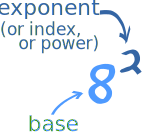
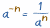

Negative Exponents
Exponents are also called Powers or Indices
Let us first look at what an "exponent" is:
|  |
The exponent of a number says how many times to use In this example: 82 = 8 × 8 = 64 |
| In words: 82 can be called "8 to the second power", "8 to the power 2" or simply "8 squared" |
|
Example: 53 = 5 × 5 × 5 = 125
In words: 53 can be called "5 to the third power", "5 to the power 3" or simply "5 cubed"
In general:
| an tells you to use a in a multiplication n times: |  |
But those are positive exponents, what about something like:
8-2
That exponent is negative ... what does it mean?
Negative Exponents
Negative? What could be the opposite of multiplying? Dividing!
Dividing is the inverse (opposite) of Multiplying.
A negative exponent means how many times to divide by the number.
Example: 8-1 = 1 ÷ 8 = 1/8 = 0.125
Or many divides:
Example: 5-3 = 1 ÷ 5 ÷ 5 ÷ 5 = 0.008
But that can be done an easier way:
5-3 could also be calculated like:
1 ÷ (5 × 5 × 5) = 1/53 = 1/125 = 0.008

That last example showed an easier way to handle negative exponents:
- Calculate the positive exponent (an)
- Then take the Reciprocal (i.e. 1/an)
To change the sign (plus to minus, or minus to plus) of the exponent,
use the Reciprocal (i.e. 1/an)
So, what about 8-2 ?
Example: 8-2 = 1 ÷ 8 ÷ 8 = 1/82 = 1/64 = 0.015625
More Examples:
| Negative Exponent | Reciprocal of Positive Exponent |
Answer | ||
|---|---|---|---|---|
| 4-2 | = | 1 / 42 | = | 1/16 = 0.0625 |
| 10-3 | = | 1 / 103 | = | 1/1,000 = 0.001 |
It All Makes Sense
My favorite method is to start with "1" and then multiply or divide as many times as the exponent says, then you will get the right answer, for example:
| Example: Powers of 5 | |||
|---|---|---|---|
| .. etc.. | |||
| 52 | 1 × 5 × 5 | 25 | |
| 51 | 1 × 5 | 5 | |
| 50 | 1 | 1 | |
| 5-1 | 1 ÷ 5 | 0.2 | |
| 5-2 | 1 ÷ 5 ÷ 5 | 0.04 | |
| .. etc.. | |||
If you look at that table, you will see that positive, zero or negative exponents are really part of the same (fairly simple) pattern.